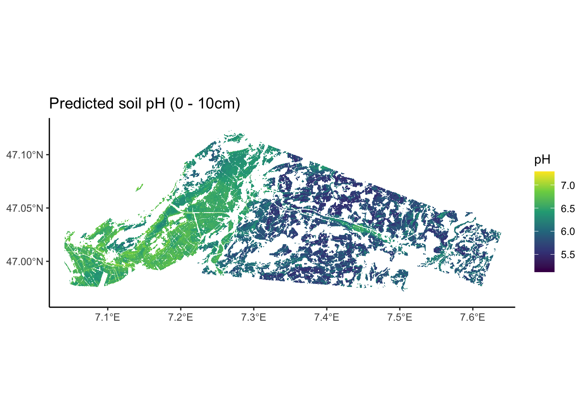
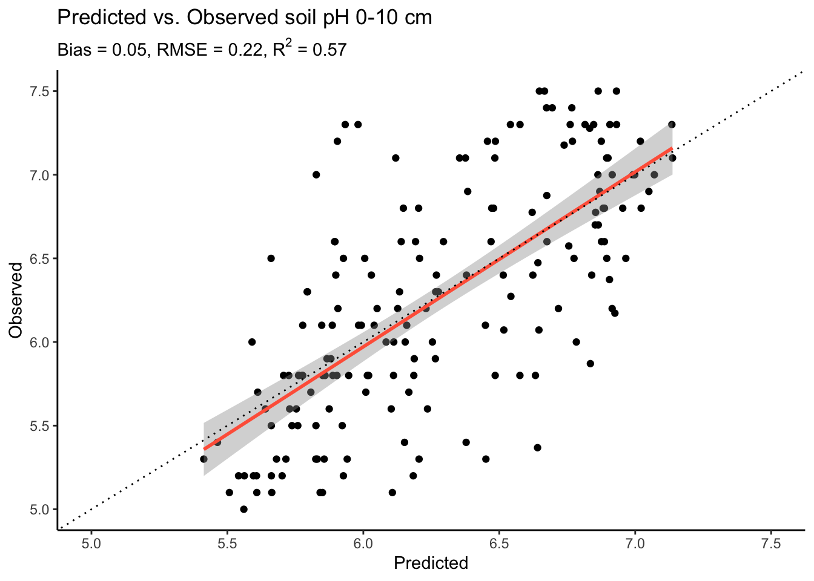

train_basic_rf <- function(coordinates) {
# Function check
if (!coordinates %in% c("none", "xy", "rotated")) {
stop("False call for coordinates!")
}
rm_coord <- c()
if (coordinates == "none") rm_coord <- c("x", "y", "x30", "x60", "y30", "y60")
if (coordinates == "xy") rm_coord <- c("x30", "x60", "y30", "y60")
# Load data
data_clean <- readRDS(here::here("data/bern_sampling_locations_with_covariates.rds"))
# Specify response: The pH in the top 10cm
response <- "ph.0.10"
# Specify predictors: Remove soil sampling information
# NEW: Also remove all coordinate variables
predictors <-
data_clean |>
dplyr::select(
-all_of(rm_coord), # Remove unwanted coordinates
-response, # Remove response variable
-site_id_unique, # Remove site ID
-tidyr::starts_with("ph"), # No pH information
-tidyr::starts_with("waterlog"), # No water-status information
-dclass, # No water-status information
-dataset) |> # No calib./valid information
names()
# Split dataset into calibration and validation
data_cal <- data_clean |> dplyr::filter(dataset == "calibration")
data_val <- data_clean |> dplyr::filter(dataset == "validation")
# Filter out any NA to avoid error when running a Random Forest
data_cal <- data_cal |> tidyr::drop_na()
data_val <- data_val |> tidyr::drop_na()
# NEW: Remove coordinates from data if needed
data_cal <- data_cal |> dplyr::select(response, predictors)
data_val <- data_val |> dplyr::select(response, predictors)
# Train a basic RF
rf <- ranger::ranger(
y = data_cal[, response], # Response variable
x = data_cal[, predictors], # Predictor variables
importance = "permutation",
seed = 42, # Specify the seed for randomization to reproduce the same model again
num.threads = parallel::detectCores() - 1) # Use all but one CPU core for quick model training
return(list(rf = rf,
response = response,
predictors = predictors,
data_clean = data_clean,
data_cal = data_cal,
data_val = data_val))
}6 [Scratchpad]
6.1 Effect of coordinates as predictors
6.1.1 Functions
6.1.1.1 Model Training
6.1.1.2 Covariate Data
get_cov_data <- function(
rf, coordinates){
# Load area to be predicted
target_raster <- terra::rast(here::here("data-raw/geodata/study_area/area_to_be_mapped.tif"))
# Turn target raster into a dataframe, 1 px = 1 cell
target_df <- as.data.frame(target_raster, xy = TRUE)
# Filter only for area of interest
target_df <- target_df |> dplyr::filter(area_to_be_mapped == 1)
# Get a list of all covariate file names
covariate_files <-
list.files(path = here::here("data-raw/geodata/covariates/"),
pattern = ".tif$",
recursive = TRUE,
full.names = TRUE
)
# Filter that list only for the variables used in the RF
used_cov <- names(rf$variable.importance)
cov_to_load <- c()
for (i_var in used_cov) {
i <- covariate_files[stringr::str_detect(covariate_files,
paste0("/", i_var, ".tif"))]
cov_to_load <- append(cov_to_load, i)
# cat("\nfor var ", i_var, " load file: ", i)
}
# Load all rasters as a stack
cov_raster <- terra::rast(cov_to_load)
# Get coordinates for which we want data
sampling_xy <- target_df |> dplyr::select(x, y)
# Extract data from covariate raster stack
cov_df <-
terra::extract(cov_raster, # The raster we want to extract from
sampling_xy, # A matrix of x and y values to extract for
ID = FALSE # To not add a default ID column to the output
)
cov_df <- cbind(sampling_xy, cov_df)
# Add rotated coordinates as when preparing training data:
cov_df <-
cov_df |>
dplyr::mutate(
x30 = x*cos(30/180*pi) - y*sin(30/180*pi),
y30 = x*sin(30/180*pi) + y*cos(30/180*pi),
x60 = x*cos(60/180*pi) - y*sin(60/180*pi),
y60 = x*sin(60/180*pi) + y*cos(60/180*pi)
)
# Remove coordinates if needed
rm_coord <- c()
if (coordinates == "none") rm_cord <- c("x", "y", "x30", "x60", "y30", "y60")
if (coordinates == "xy") rm_cord <- c("x30", "x60", "y30", "y60")
# Remove unwanted
cov_df <- cov_df |> dplyr::select(-all_of(rm_coord))
# Attaching reference timeset levels from prepared dataset
bern_cov <- readRDS(here::here("data/bern_sampling_locations_with_covariates.rds"))
cov_df$timeset <- "d1979_2010"
levels(cov_df$timeset) <- c(unique(bern_cov$timeset))
# Define numerically variables
cat_vars <-
cov_df |>
# Get number of distinct values per variable
dplyr::summarise(dplyr::across(dplyr::everything(), ~ dplyr::n_distinct(.))) |>
# Turn df into long format for easy filtering
tidyr::pivot_longer(dplyr::everything(),
names_to = "variable",
values_to = "n") |>
# Filter out variables with 10 or less distinct values
dplyr::filter(n <= 10) |>
# Extract the names of these variables
dplyr::pull('variable')
# Define categorical variables
cov_df <-
cov_df |>
dplyr::mutate(dplyr::across(cat_vars, ~ as.factor(.)))
# Reduce dataframe to hold only rows without any NA values
cov_df <-
cov_df |>
tidyr::drop_na()
return(list(cov_df=cov_df,
cov_raster=cov_raster))
}6.1.1.3 Get Map
get_prediction_map <- function(
rf, cov_df, cov_raster
) {
library(ranger)
# Make predictions using the RF model
prediction <-
predict(rf, # RF model
data = cov_df, # Predictor data
num.threads = parallel::detectCores()-1)
# Attach predictions to dataframe and round them
cov_df$prediction <- round(prediction$predictions, 2)
# Extract dataframe with coordinates and predictions
df_map <- cov_df |> dplyr::select(x, y, prediction)
# Turn dataframe into a raster
ra_predictions <-
terra::rast(
df_map, # Table to be transformed
crs = "+init=epsg:2056", # Swiss coordinate system
extent = terra::ext(cov_raster) # Prescribe same extent as predictor rasters
)
# Let's have a look at our predictions!
# To have some more flexibility, we can plot this in the ggplot-style as such:
p <-
ggplot2::ggplot() +
tidyterra::geom_spatraster(data = ra_predictions) +
ggplot2::scale_fill_viridis_c(
na.value = NA,
option = "viridis",
name = "pH"
) +
ggplot2::theme_classic() +
ggplot2::scale_x_continuous(expand = c(0, 0)) +
ggplot2::scale_y_continuous(expand = c(0, 0)) +
ggplot2::labs(title = "Predicted soil pH (0 - 10cm)")
return(p)
}6.1.1.4 Get Metrics
get_modobs_plot <- function(
rf, data_val
) {
# Need to load {ranger} because ranger-object is used in predict()
library(ranger)
# Make predictions for validation sites
prediction <-
predict(rf, # RF model
data = data_val, # Predictor data
num.threads = parallel::detectCores()-1)
# Save predictions to validation df
data_val$pred <- prediction$predictions
# Calculate error
err <- data_val$ph.0.10 - data_val$pred
# Calculate bias
bias <- mean(err, na.rm = T) |> round(2)
# Calculate RMSE
rmse <- sqrt(mean(err, na.rm = T)) |> round(2)
# Calculate R2
r2 <- cor(data_val$ph.0.10, data_val$pred, method = "pearson")^2 |> round(2)
# Make plot
p <-
data_val |>
ggplot2::ggplot(ggplot2::aes(x = pred, y = ph.0.10)) +
ggplot2::geom_point() +
ggplot2::geom_smooth(method = "lm",
color = "tomato") +
# Add layout
ggplot2::theme_classic() +
ggplot2::geom_abline(
intercept = 0,
slope = 1,
linetype = "dotted") +
ggplot2::ylim(5, 7.5) +
ggplot2::xlim(5, 7.5) +
ggplot2::labs(
title = "Predicted vs. Observed soil pH 0-10 cm",
# subtitle = paste0("Bias = ", bias, ", RMSE = ", rmse, ", R^2 = ", r2),
subtitle = bquote(paste("Bias = ", .(bias),
", RMSE = ", .(rmse),
", R"^2, " = ", .(r2))),
x = "Predicted",
y = "Observed"
)
return(p)
}6.2 No Coordinates
coordinates <- "none"
model <- train_basic_rf(coordinates = coordinates)
covs <- get_cov_data(rf = model$rf, coordinates = coordinates)
map <- get_prediction_map(rf = model$rf,
cov_df = covs$cov_df,
cov_raster = covs$cov_raster)
modobs <- get_modobs_plot(rf = model$rf,
data_val = model$data_val)
map
modobs
6.3 Only xy Coordinates
coordinates <- "xy"
model <- train_basic_rf(coordinates = coordinates)
covs <- get_cov_data(rf = model$rf, coordinates = coordinates)
map <- get_prediction_map(rf = model$rf,
cov_df = covs$cov_df,
cov_raster = covs$cov_raster)
modobs <- get_modobs_plot(rf = model$rf,
data_val = model$data_val)
map
modobs
6.4 xy and rotated coordinates
coordinates <- "rotated"
model <- train_basic_rf(coordinates = coordinates)
covs <- get_cov_data(rf = model$rf, coordinates = coordinates)
map <- get_prediction_map(rf = model$rf,
cov_df = covs$cov_df,
cov_raster = covs$cov_raster)
modobs <- get_modobs_plot(rf = model$rf,
data_val = model$data_val)
map
modobs